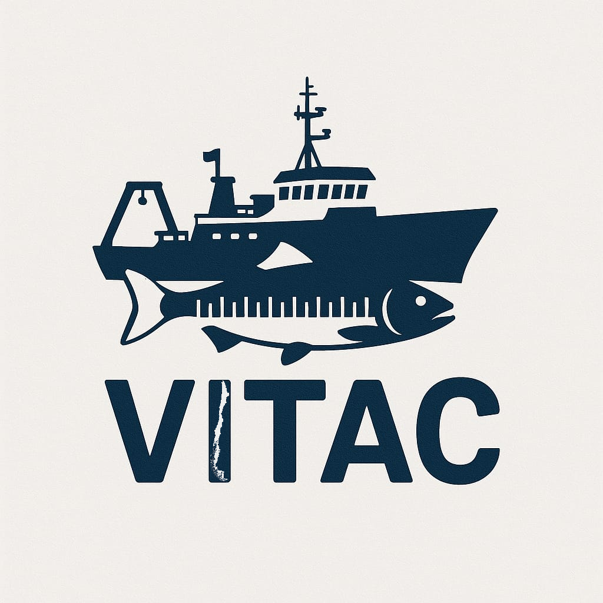

VITAC — Visualizador de Tallas y Capturas
Adrián Ibieta - Jairo Gutiérrez
📚 Excel maestro
—
Lances: —
Sábana: —
Capturas: —
Biometría: —
Est. Oceano: —
Num. Tr: —
Track: —
0/7 · esperando Excel maestro…
Centrar lances
Est. Oceano
Num. Tr
Track
Lances
Todos
Limpiar
Comparar
Especie
(todas)
0 seleccionados
Bin (cm)
0.5
1
2
5
Barras/Línea
%
kg
% Machos
—
% Hembras
—
% Indet.
—
N individuos
—
N con EMS
—
% con EMS
—
//